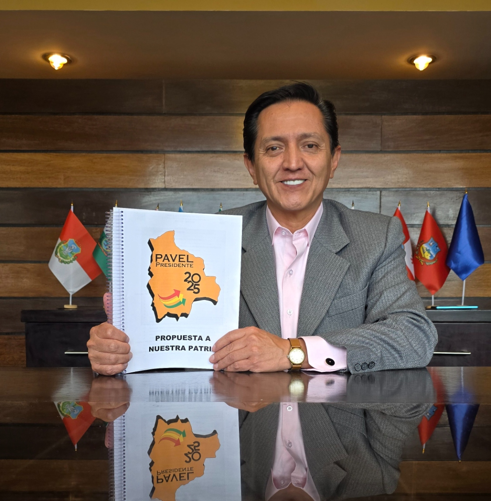
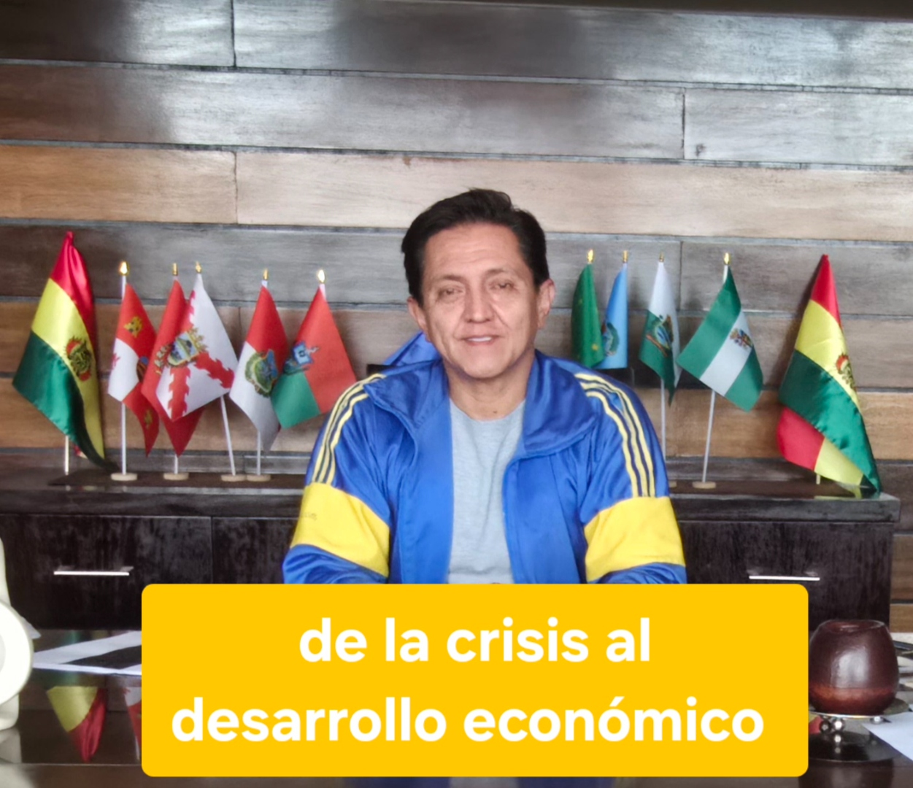
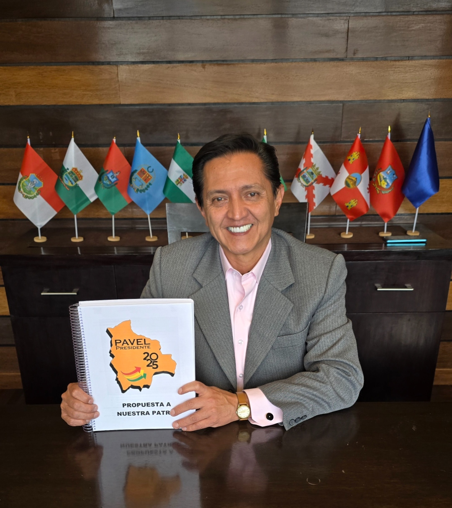
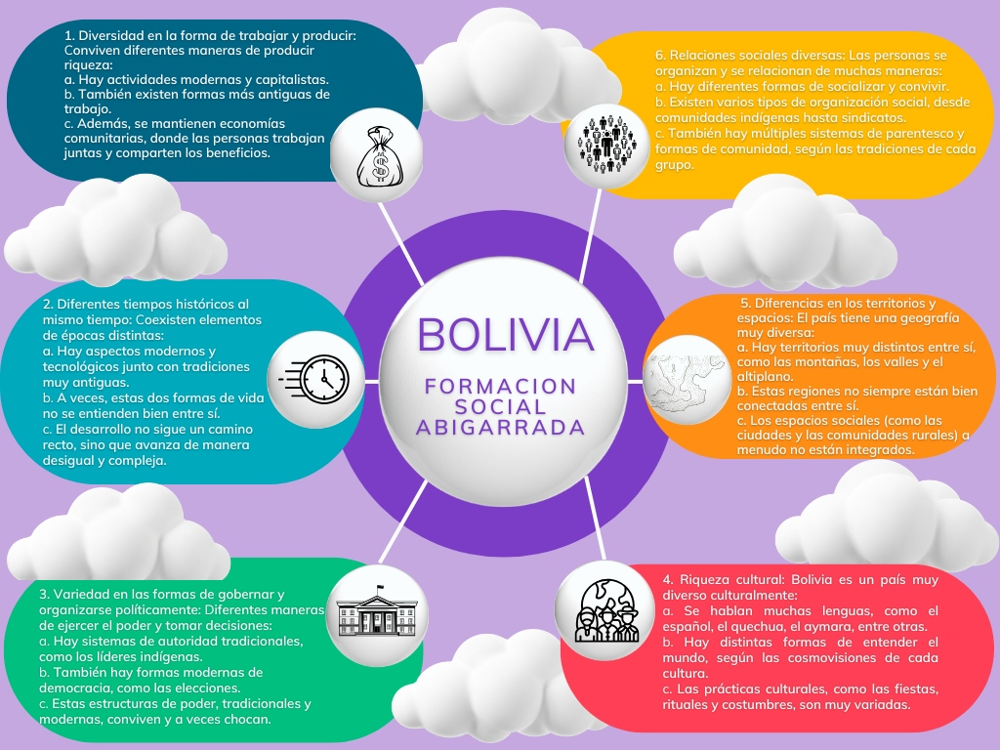
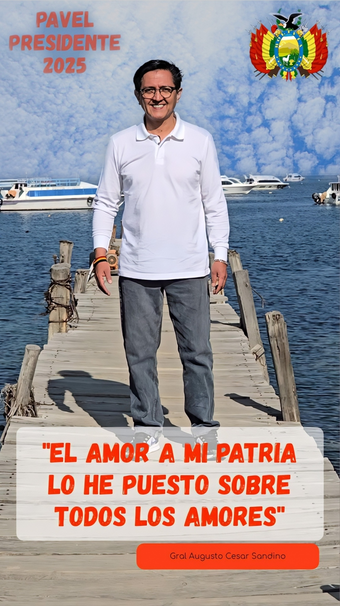
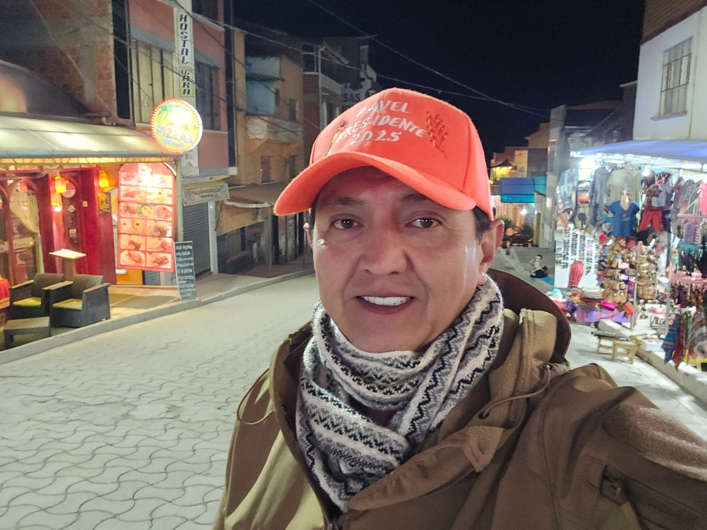

Pavel Aracena
La plata del Estado es tuya. Yo te muestro adónde se fue.
Ingeniero civil, 34 años construyendo obra pública en Bolivia. Sé cómo se hace un proyecto bien hecho, y por eso reconozco cuándo lo hacen mal. Investigo cada obra fallida y cada boliviano que falta con datos verificables, cito la fuente y lo explico en lenguaje simple. Sin adornos y sin miedo.

Presentando la propuesta, La Paz

Un ingeniero civil boliviano convertido en estratega y comunicador
Soy Pavel Aracena, ingeniero civil boliviano con 34 años de trayectoria profesional, experto en desarrollo económico y excandidato a la Presidencia de Bolivia. Durante años he combinado la investigación política y el análisis socioeconómico con la producción de contenido audiovisual, buscando siempre la misma meta: acercar la política real a la gente común.
Hoy sigo construyendo esa propuesta y la comunico donde la conversación pública realmente ocurre: en redes sociales, con un estilo directo, sarcástico cuando hace falta, y siempre respaldado en datos. Fui candidato a la Presidencia en 2025 por la Alianza Libertad y Progreso – ADN, y ese recorrido no terminó ahí: sigue en cada investigación que publico.
"El amor a mi patria lo he puesto sobre todos los amores."
— Gral. Augusto César Sandino
De la crisis al desarrollo económico
Una propuesta escrita como se resuelve un problema de ingeniería: con diagnóstico, plan y ejecución. Estos son los ejes centrales de la campaña Pavel Presidente 2025.
El litio es de los bolivianos
Referéndum nacional para que el pueblo boliviano decida directamente el futuro de sus reservas de litio, sin intermediarios.
El primer cripto-gobierno de Bolivia
Modernización del Estado con bitcoin y criptomonedas como herramienta de transparencia y eficiencia administrativa.
Un nuevo pacto social
Cada región decide cómo quiere vivir, dentro de una nueva constitución construida desde los territorios y no desde el centralismo.
Ingeniería aplicada a la economía
Soluciones técnicas y medibles para salir de la crisis, no solo discursos: un plan de desarrollo económico con metas concretas.
Bolivia: una sociedad abigarrada
Parto de una idea central de la sociología boliviana: nuestro país no es una sola cosa. Conviven al mismo tiempo distintas formas de producir, gobernar, relacionarse y entender el mundo. Reconocer esa diversidad — no negarla — es el punto de partida de cualquier propuesta que quiera funcionar de verdad para todos los bolivianos.

Diversidad económica
Conviven actividades modernas y capitalistas, formas de trabajo tradicionales y economías comunitarias donde se comparten los beneficios.
Tiempos históricos coexistentes
Lo moderno y lo ancestral avanzan a la vez, no siempre en armonía. El desarrollo no sigue un camino recto, sino desigual y complejo.
Formas de gobernar
Autoridades tradicionales, liderazgos indígenas y democracia moderna conviven — y a veces chocan — dentro de un mismo territorio.
Riqueza cultural
Español, quechua, aymara y muchas otras lenguas y cosmovisiones conviven en fiestas, rituales y costumbres profundamente diversas.
Territorios diversos
Montañas, valles y altiplano no siempre están bien conectados entre sí. Cada región necesita soluciones hechas a su medida.
Relaciones sociales diversas
Comunidades indígenas, sindicatos y múltiples formas de organización y parentesco coexisten a lo largo del país.
Comunicando política donde está la gente
Produzco y edito mi propio contenido para TikTok en dos cuentas — @pavelpresidente2025 y @pavel.aracena — con mensajes directos, humor político y propuestas explicadas en segundos. Estos son algunos de los videos con más alcance.
"¡El litio es de los bolivianos! Propongo un referéndum para que el pueblo decida su futuro." #ElLitioEsNuestro
Ver en TikTok →Sátira política sobre el socialismo boliviano, con el estilo directo y humorístico que caracteriza al canal. #antisocialismo #bolivia
Ver en TikTok →"El primer Cripto Gobierno de Bolivia" — modernización estatal con bitcoin y criptomonedas. #elecciones2025
Ver en TikTok →"Soy Pavel y tengo un plan de gobierno." #Bolivia #PavelPresidente2025
Ver en TikTok →"Rodrigo Paz, Eduardo del Castillo y Johnny Fernández no quisieron debatir conmigo en UNITEL. Soy Pavel."
Ver en TikTok →"Ya no pueden arruinar más al país con sus mentiras." #ViralBolivia #Noticias
Ver en TikTok →Presentación de la candidatura presidencial rumbo a las elecciones 2025, con presencia en todo el territorio boliviano.
Ver en TikTok →En los medios
Como candidato presidencial por la Alianza Libertad y Progreso – ADN en las elecciones de 2025, participé en entrevistas y debates en medios nacionales de radio, televisión y prensa escrita. Estas son algunas coberturas.
Pavel Aracena es presentado como nuevo candidato presidencial de Libertad y Progreso – ADN
Red UnoCandidato de Libertad y Progreso ADN propone referendo para militarizar el Chapare, bloqueos y avasallamientos
Visión 360“Haré un referendo para definir el rol de las FFAA en bloqueos, avasallamientos y el Chapare”
Radio Fides BoliviaEntrevista: la campaña y la meta planteada para las elecciones
Monumental FMEntrevista en vivo — #SignameLosBuenos — sobre el plan de gobierno y la crisis boliviana
El Ánfora · ErbolEntrevista sobre temas económicos, sociales, políticos y medioambientales
OpiniónEntrevista sobre la coyuntura electoral y la “crisis de valores” en Bolivia
Agencia de Noticias VioletaAnuncia su presencia en el foro final en Sucre y cuestiona el manejo del Bicentenario
En terreno y en cámara
Momentos de la campaña Pavel Presidente 2025: grabaciones, recorridos y presentaciones de la propuesta.


Hablemos
¿Quieres colaborar en la campaña, proponer una entrevista o simplemente conversar sobre el futuro de Bolivia? Escríbeme o sígueme en redes.
pavelpresidente1@gmail.com